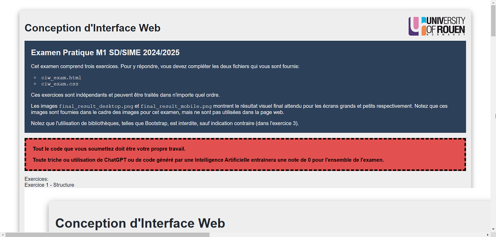
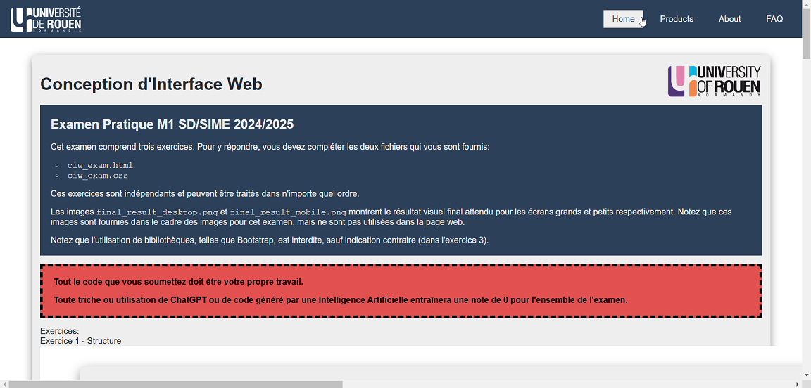
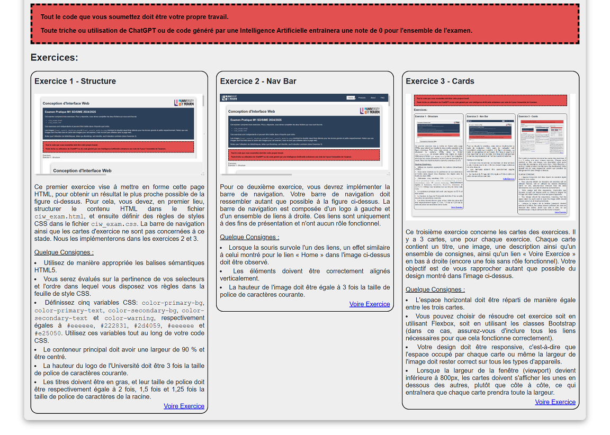

Conception d'Interface Web
Examen Pratique M1 SD/SIME 2024/2025
Cet examen comprend trois exercices. Pour y répondre, vous devez compléter les deux fichiers qui vous sont fournis:
ciw_exam.htmlciw_exam.css
Ces exercices sont indépendants et peuvent être traités dans n'importe quel ordre.
Les images final_result_desktop.png et final_result_mobile.png montrent le résultat visuel final attendu pour les écrans grands et petits respectivement. Notez que ces images sont fournies dans le cadre des images pour cet examen, mais ne sont pas utilisées dans la page web.
Notez que l'utilisation de bibliothèques, telles que Bootstrap, est interdite, sauf indication contraire (dans l'exercice 3).
Tout le code que vous soumettez doit être votre propre travail.
Toute triche ou utilisation de ChatGPT ou de code généré par une Intelligence Artificielle entraînera une note de 0 pour l'ensemble de l'examen.
Exercices:
Exercice 1 - Structure

Ce premier exercice vise à mettre en forme cette page HTML,
pour obtenir un résultat le plus proche possible de la figure ci-dessus.
Pour cela, vous devez, en premier lieu, structurer le contenu HTML dans le fichier
ciw_exam.html, et ensuite définir des règles de styles CSS dans le fichier
ciw_exam.css. La barre de navigation ainsi que les cartes d'exercice ne sont
pas
concernées à ce stade. Nous les implémenterons dans les exercices 2 et 3.
Quelque Consignes :
- Utilisez de manière appropriée les balises sémantiques HTML5.
- Vous serez évalués sur la pertinence de vos selecteurs et l'ordre dans lequel vous disposez vos règles dans la feuille de style CSS.
-
Définissez cinq variables CSS:
color-primary-bg,color-primary-text,color-secondary-bg,color-secondary-textetcolor-warning, respectivement égales à#eeeeee,#222831,#2d4059,#eeeeeeet#e25050. Utilisez ces variables tout au long de votre code CSS. - Le conteneur principal doit avoir une largeur de 90 % et être centré.
- La hauteur du logo de l'Université doit être 3 fois la taille de police de caractères courante.
- Les titres doivent être en gras, et leur taille de police doit être respectivement égale à 2 fois, 1,5 fois et 1,25 fois la taille de police de caractères de la racine.
Exercice 2 - Nav Bar
Pour ce deuxième exercice, vous devrez implémenter la barre de navigation. Votre barre de navigation doit ressembler autant que possible à la figure ci-dessus. La barre de navigation est composée d'un logo à gauche et d'un ensemble de liens à droite. Ces liens sont uniquement à des fins de présentation et n'ont aucun rôle fonctionnel.
Quelque Consignes :
- Lorsque la souris survole l'un des liens, un effet similaire à celui montré pour le lien « Home » dans l'image ci-dessus doit être observé.
- Les éléments doivent être correctement alignés verticalement.
- La hauteur de l'image doit être égale à 3 fois la taille de police de caractères courante.
Exercice 3 - Cards
Ce troisième exercice concerne les cartes des exercices. Il y a 3 cartes, une pour chaque exercice. Chaque carte contient un titre, une image, une description ainsi qu'un ensemble de consignes, ainsi qu'un lien « Voire Exercice » en bas à droite (encore une fois sans rôle fonctionnel). Votre objectif est de vous rapprocher autant que possible du design montré dans l'image ci-dessus.
Quelque Consignes :
- L'espace horizontal doit être réparti de manière égale entre les trois cartes.
- Vous pouvez choisir de résoudre cet exercice soit en utilisant Flexbox, soit en utilisant les classes Bootstrap (dans ce cas, assurez-vous d'inclure tous les liens nécessaires pour que cela fonctionne correctement).
- Votre design doit être responsive, c'est-à-dire que l'espace occupé par chaque carte ou même la largeur de l'image doit rester correct sur tous les types d'appareils.
-
Lorsque la largeur de la fenêtre (viewport) devient inférieure à 800px, les cartes doivent
s'afficher les unes en dessous des autres, plutôt que côte à côte, ce qui entraînera que
chaque carte prendra toute la largeur. L'image
final_result_mobile.pngmontre le résultat visuel attendu pour les tailles d'écran plus petites. Notez que cette image est fournie dans le cadre des images pour cet examen, mais n'est pas utilisée dans la page web.